DIT-S/4 · SAMPLING Y EVALUACIÓN · 31/10/2026
DiT-S/4 · checkpoint de 150K pasos
Evaluación completada con pesos EMA del checkpoint compartido por David. Se conserva el entrenamiento recibido y su condición nula de ceros.
Resultado principal: DPM-Solver++20 con CFG 4 obtiene el menor FID-10K (71,2168). CFG 5 obtiene el mayor CLIP Score. DDPM250 con CFG 4 da FID 76,6554 y valores CLIP ligeramente mayores que DPM CFG4. Una sola semilla; estas diferencias no incluyen intervalos de confianza.
COCO val2014 · 10.000 referencias fijas · center crop 256×256 · primera caption · seed 0 · batch 8 · Apple Silicon MPS.
Alcance de los datos: el log de David registra 45.174 imágenes de entrenamiento. El extractor de Linda selecciona imágenes con personas y recorta alrededor de ellas. Estas 10.000 referencias de val2014 no están filtradas por personas y usan recorte central. Todos los CFG y samplers comparten el mismo protocolo, pero los resultados absolutos también reflejan esta diferencia respecto del entrenamiento. No se han calculado métricas separadas con/sin personas ni demostrado una causa única de los fallos.
Informe · CSV completo · Protocolo y reproducción · Verificación de los archivos originales
Resultados finales
El FID-2K de 150K se muestra por separado en el informe. No se evaluaron otros pasos de entrenamiento ni se presenta una curva de convergencia.
Gráficas del barrido DPM
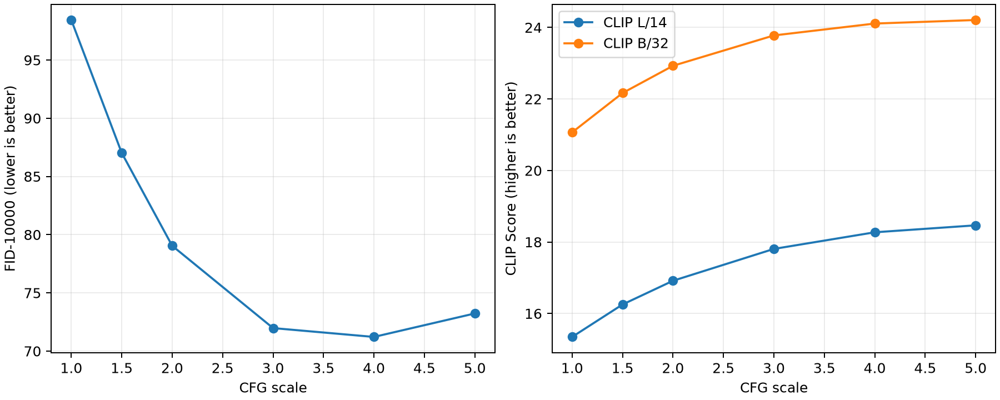
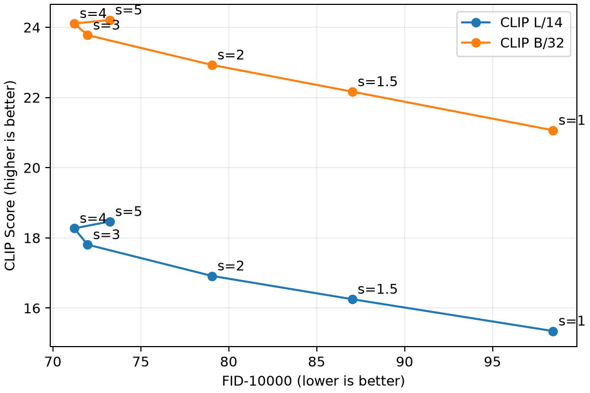
Comparación visual con los mismos ocho textos
Observaciones y conclusiones para la memoria
Se muestran los primeros ocho ejemplos del manifest, sin escogerlos por su calidad. La referencia COCO es una imagen real asociada a la caption; el modelo no tiene que copiarla. Comprueba objetos, cantidades, colores y relaciones: los resultados pueden tener defectos y desalinearse con el texto.
1. A white plate with sausage, eggs and other meat.
COCO ID 434763 · ejemplo fijo 1/8
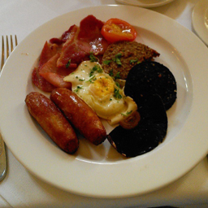
Referencia COCODPM 20 · CFG 4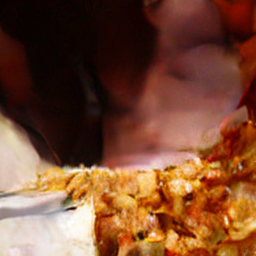
DDPM 250 · CFG 4Ver los seis CFG de DPM para este mismo texto
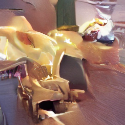
CFG 1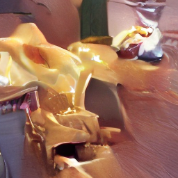
CFG 1.5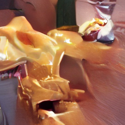
CFG 2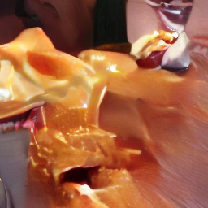
CFG 3CFG 4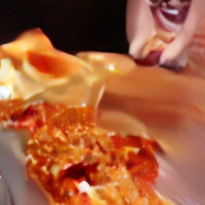
CFG 52. A man walking into the ocean while holding a surfboard.
COCO ID 332058 · ejemplo fijo 2/8
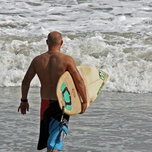
Referencia COCODPM 20 · CFG 4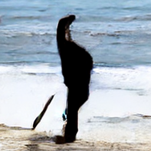
DDPM 250 · CFG 4Ver los seis CFG de DPM para este mismo texto
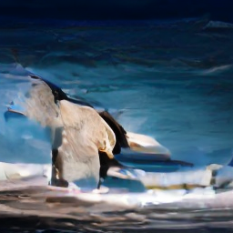
CFG 1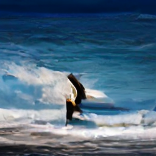
CFG 1.5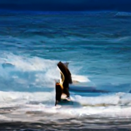
CFG 2CFG 3CFG 4CFG 53. A bird sitting in a field of beautiful purple flowers.
COCO ID 117237 · ejemplo fijo 3/8
Referencia COCODPM 20 · CFG 4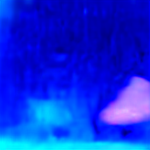
DDPM 250 · CFG 4 Ver los seis CFG de DPM para este mismo texto
CFG 1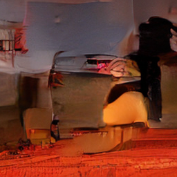
CFG 1.5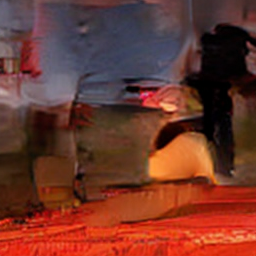
CFG 2CFG 3CFG 4CFG 5 4. A man and two women walking their dogs and hiking in the woods.
COCO ID 57703 · ejemplo fijo 4/8
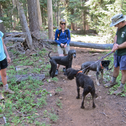
Referencia COCO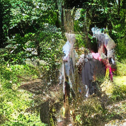
DPM 20 · CFG 4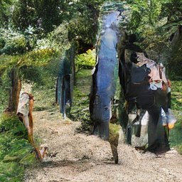
DDPM 250 · CFG 4Ver los seis CFG de DPM para este mismo texto
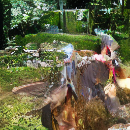
CFG 1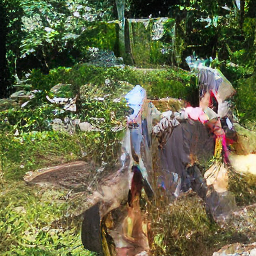
CFG 1.5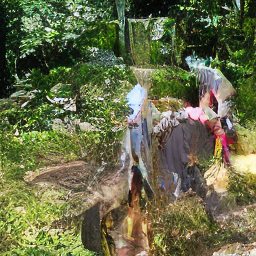
CFG 2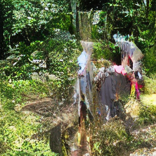
CFG 3CFG 4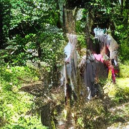
CFG 55. A woman smiling while standing next to a giraffe.
COCO ID 377361 · ejemplo fijo 5/8
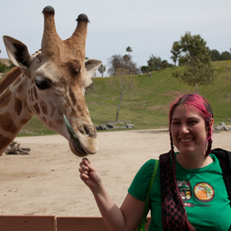
Referencia COCO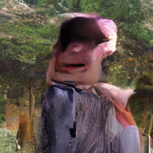
DPM 20 · CFG 4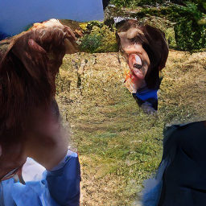
DDPM 250 · CFG 4Ver los seis CFG de DPM para este mismo texto
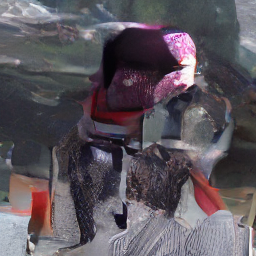
CFG 1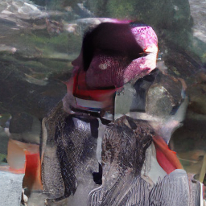
CFG 1.5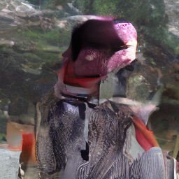
CFG 2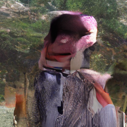
CFG 3CFG 4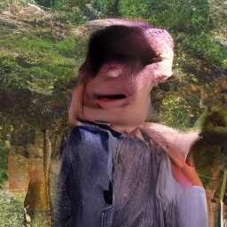
CFG 56. A man on a horse watching another man wrestle a cow.
COCO ID 246562 · ejemplo fijo 6/8
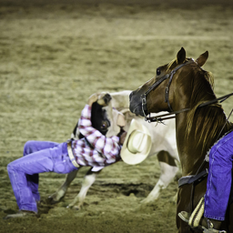
Referencia COCO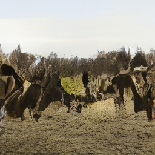
DPM 20 · CFG 4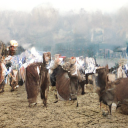
DDPM 250 · CFG 4Ver los seis CFG de DPM para este mismo texto
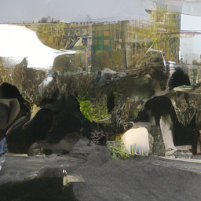
CFG 1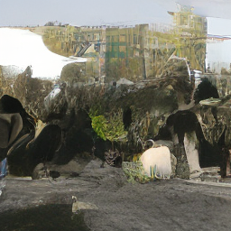
CFG 1.5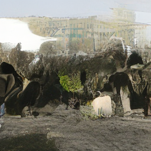
CFG 2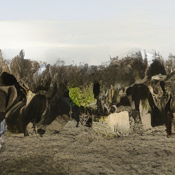
CFG 3CFG 4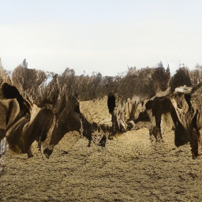
CFG 57. Two giraffes are running through a bushy savannah.
COCO ID 531607 · ejemplo fijo 7/8
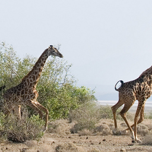
Referencia COCO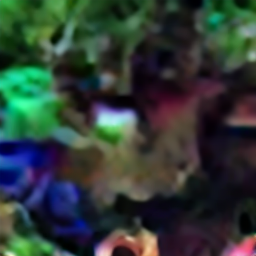
DPM 20 · CFG 4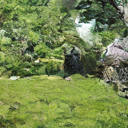
DDPM 250 · CFG 4Ver los seis CFG de DPM para este mismo texto
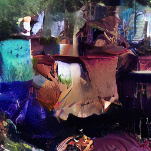
CFG 1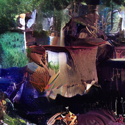
CFG 1.5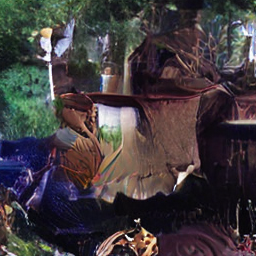
CFG 2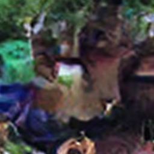
CFG 3CFG 4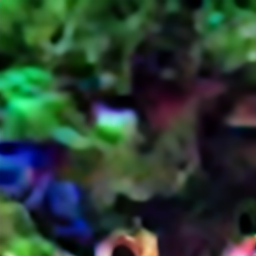
CFG 58. A motorized cart fills a train with luggage
COCO ID 137727 · ejemplo fijo 8/8
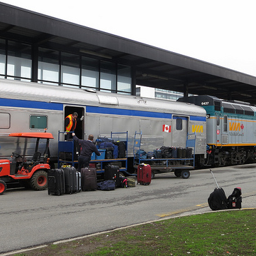
Referencia COCODPM 20 · CFG 4DDPM 250 · CFG 4Ver los seis CFG de DPM para este mismo texto
CFG 1CFG 1.5CFG 2CFG 3CFG 4CFG 5
Los PNG se copian sin retocarlos. Este paquete contiene 64 PNG ilustrativos y trazas de todos los resultados; los 72.000 PNG de generación, 10.000 referencias y el checkpoint no se incluyen en este repositorio.